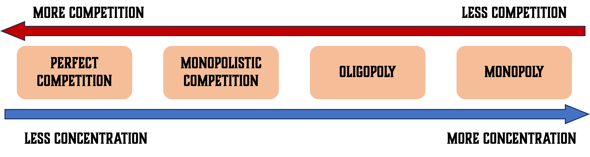
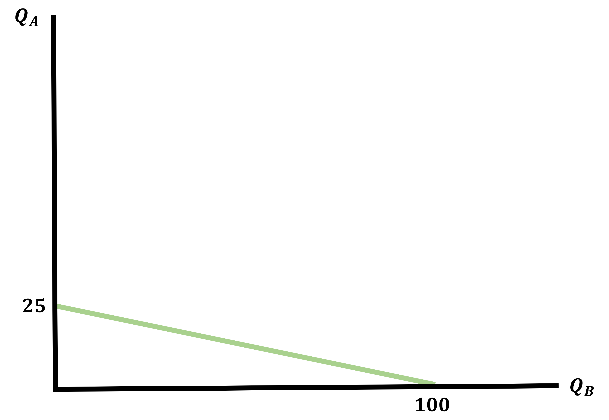
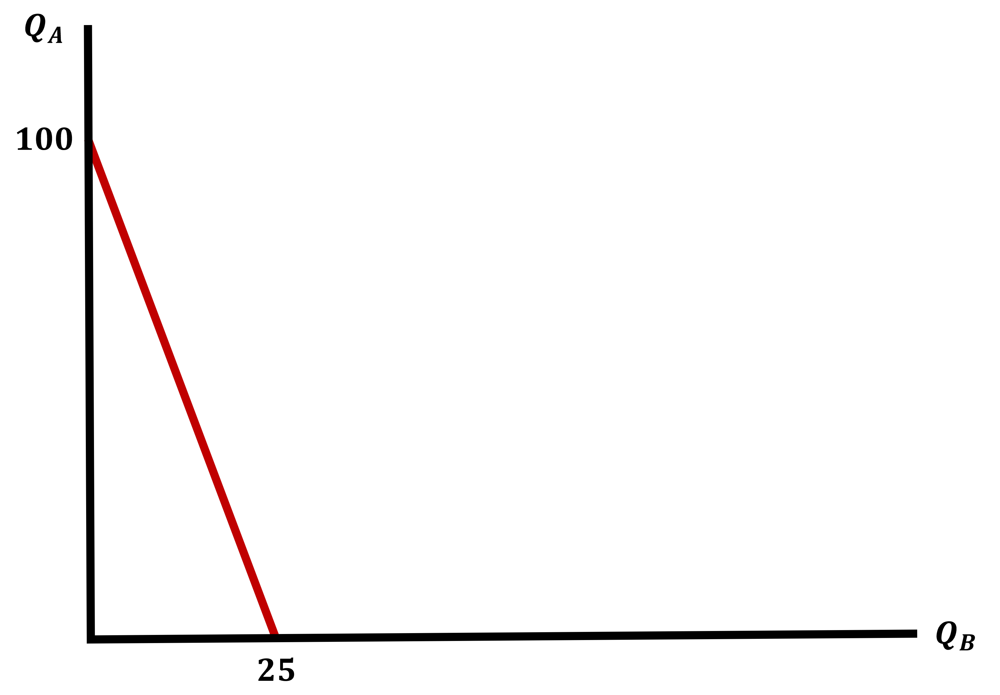
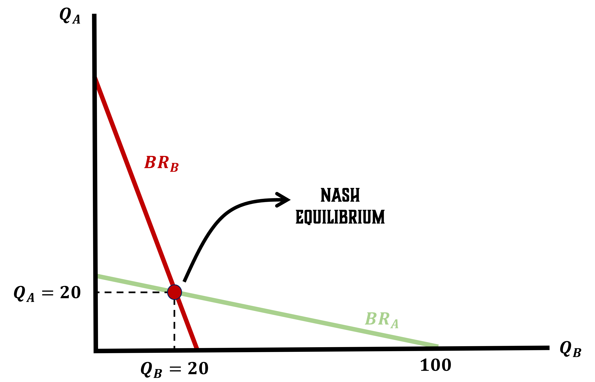
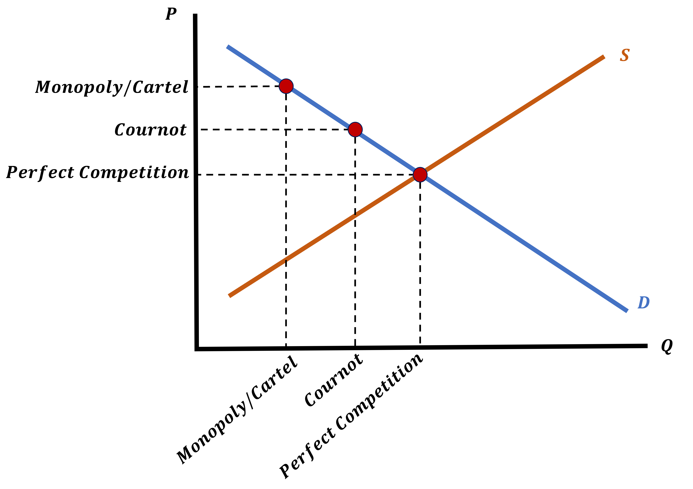

Imperfect Competition
EC 311 - Intermediate Microeconomics
2024
Outline
Chapter 11
Topics
- Oligopoly (11.1)
- Collusion & Cartels (11.2)
- Bertrand Competition (11.3)
- Cournot Competition (11.4)
- Stackelberg Competition (11.5)
Extreme Markets & Imperfect Competition
Up To Now
So far we have talked about Perfect Competition and Monopoly
- These firms are either complete price takers or complete price setters
- But these are the extremes, the real world is more nuanced
- Neither of our models are likely to be truly realistic, but they do a good job at showing us the ends of our Competitive Spectrum

Markets
Most markets are somewhere in-between
- Firms cannot set market prices by themselves
- But there are circumstances where there are large firms and are few enough that one single firms choice can impact market prices
This is the basics of Imperfect Competition and what we will be tackling until the end
Imperfect Competition
Firms are still competing but they know who their rivals are and will adopt strategies based on what they think their rivals will do
- In order to model firms in these contexts, we need to learn the very basics about Game Theory
- This is the field of decision-making in situations where actions affect others’ outcomes and vice-versa
- We will keep things simple by only studying interactions between two firms
- We call this a Duopoloy
- The intuition and approach we will take holds for cases where there are more than 2 firms
- This is called an Oligopoly
Game Theory
Decision-Making Until Now
We have only studied decisions where one person or one firm were making decisions “in a vacuum”
- We specifically addressed what is best for the individual or the firm, but it never depended on what other people or firms do
Monopolies were slightly different
They maximized porfits, while taking into account the behavior of the consumers in their market
- Our models of Imperfect Competition are going to look similarly, with some modifications
Game Theory Basics
Let’s think of a simple example to illustrate Game Theory
Imagine that you manage a gas station. Directly across the street from you is a competing gas station. Also assume that you are the only stations in town
Both of you set your gas prices at he start of the day and only have two choices:
Set Low Price
Set High Price
This means there are four possible outcomes we will consider
Game Theory Basics - Gas Station Example
So what should you do?
Game Theory - Nash Equilibrium
Let’s formalize the thought process Game Theory indicates
Imagine that your competitor chooses to set a High Price. How should you respond?
- You can take the entire market and earn 20 by setting a Low Price
- This is clearly better than setting a High Price and sharing the market earning 15
Now imagine the competitor chose to set a Low Price. How should you respond?
- If you do not set a Low Price, your competitor will take the entire market and you will earn 0
- Your best response is to also set a Low Price and earn 10
Game Theory - Nash Equilibrium
Regardless of what your competitor does, the best thing for you to do is to set a Low Price
- Now if you switch perspectives and answer the same questions from your competitor’s point of view You will get the same answer
- So both of you are responding as you best could, to each other’s best decision
This outcome is called a
Nash Equilibrium
Nash Equilibrium
I will abbreviate Nash Equilibrium as NE Let’s define it formally
A set of choices (one for each player) is a NE if:
- Each player’s choice maximized their payoff given the choice of the other player
- Note that the NE is not the outcome that maximizes the total payoffs earned by each player
- If both gas stations had set a High Price they would have each earned 15 for a total of 30
- With the outcome we get, both set a Low Price and earn 10 each for a total of 20
Nash Equilibrium
The term Best Responding is a grat way of thinking about NE because it sets us up well for integrating it into our model of firm behavior
- Firm A an come up with a Best Response to any price that their competitor might set
- In turn, their competitor, Firm B can also come up with a Best Response strategy to any price that Firm A might set
- The prices at which Both Firms are simultaneously best responding to one another are the Nash Equilibrium Prices
Nash Equilibrium in Producer Markets
To put this in terms of our models where firms maximize profit based on their choice of Quantity \(Q\):
- The quantities at which both firms are simultaneously best responding to one another are the Nash Equilibrium quantities
- The Market Price is determined by the Sum of the Quantitites
We are going to be dealing with several models of imperfect competition
Cornout Competition
Cartels
Stackelberg Competition
Bertrand Competition
Cournot Competition
Cournot Competition = Simultaneous Decisions
This model consists of two firms competing by Best Responding to one-another’s quantity choices
We call this a Cournout Competition or Cornout Equilibrium
- Mathematically, this will look like a modified Monopoly with two firms
\[\begin{align*} \pi_{A} &= P \cdot Q_{A} - C(Q_{A}) \\ \pi_{B} &= P \cdot Q_{B} - C(Q_{B}) \\ \end{align*}\]
Price is a function of Market Quantity which is the sum of both firms quantity
\[\begin{align*} P &= f(Q_{S}) = f(Q_{A} + Q_{B}) \end{align*}\]
Which is the Market Demand Curve
Cournot Equilibrium - Example
Let both firms have the following Cost Functions and Demand Curve
\[ C(Q) = Q^{2} \;\;\;\;\; ; \;\;\;\;\; P = 100 - Q_{D} \]
Demand is the sum of both firms produced quantities
\[\begin{align*} Q_{D} &= Q_{A} + Q_{B} \\ \end{align*}\]
Find the Demand Curve
\[\begin{align*} P &= 100 - \color{red}{Q_{D}} \\ P &= 100 - \color{red}{(Q_{A} + Q_{B})} \\ P &= 100 - Q_{A} - Q_{B} \end{align*}\]
Cournot Equilibrium - Profits
We can then write these firms profits using our updated Demand Curve
\[ (P = 100 - Q_{A} - Q_{B}) \]
Remember profits are written as
\[ \pi = P \cdot Q - C(Q) \]
Write both Firm A and Firm B’s Profit Functions
\[\begin{align*} \pi_{A} &= (100 - Q_{A} - Q_{B}) \cdot Q_{A} - Q_{A}^{2} \\ \\ \pi_{B} &= (100 - Q_{A} - Q_{B}) \cdot Q_{B} - Q_{B}^{2} \end{align*}\]
Cournot Equilibrium - Best Response Functions
We find Best Response Functions because we want to model it in such a way that we can observe responses to any possible quantity levels
We can find these by finding the profit maximizing quantity of each profit function
\[ \frac{\partial \pi_{i}}{\partial Q_{i}} = 0 \]
Cournot Equilibrium - Example Best Response Functions
\[\begin{align*} \pi_{A} &= (100 - Q_{A} - Q_{B}) \cdot Q_{A} - Q_{A}^{2} \\ \\ \pi_{B} &= (100 - Q_{A} - Q_{B}) \cdot Q_{B} - Q_{B}^{2} \end{align*}\]
Find the Best Response Functions for both firms
Hint: You only need to do the work for one, the other is symmetric
Find \(\; \frac{\partial \pi_{A}}{\partial Q_{A}} = 0\)
\[\begin{align*} 100 - 2Q_{A} - Q_{B} - 2Q_{A} &= 0 \\ 4Q_{A} &= 100 - Q_{B} \\ Q^{*}_{A} &= \frac{100 - Q_{B}}{4} \end{align*}\]
By Symmetry, we know Firm B’s Best Response
\[\begin{align*} Q^{*}_{B} &= \frac{100 - Q_{A}}{4} \end{align*}\]
Cournot Equilibrium - Optimal Quantity
Would you believe me if I told you we can get a number for \(Q_{A}^{*}\) from this?
We have \(\; Q^{*}_{A} = \frac{100 - Q_{B}}{4} \;\; \& \;\; Q^{*}_{B} = \frac{100 - Q_{A}}{4}\)
Find \(\; Q^{*}_{A} \;\) by plugging in our \(\; Q^{*}_{B} \;\) function
We solve this by putting one Best Response into the other
\[\begin{align*} Q^{*}_{A} = \frac{100 - \color{red}{Q_{B}}}{4} \\ \\ Q^{*}_{A} = \frac{100 - \color{red}{\frac{100 - Q_{A}}{4}}}{4} \end{align*}\]
Cournot Equilibrium - Optimal Quantity & Price
\[ Q^{*}_{A} = \frac{100 - \frac{100 - Q_{A}}{4}}{4} \]
Find Optimal Quantity
\[\begin{align*} 4Q^{*}_{A} &= 100 - \frac{100 - Q_{A}^{*}}{4} \\ 16Q^{*}_{A} &= 400 - (100 - Q_{A}^{*}) \\ 15Q^{*}_{A} &= 300 \\ Q^{*}_{A} &= 20 = Q^{*}_{B} \end{align*}\]
Find Market Supply
\[\begin{align*} Q_{S} &= Q_{A}^{*} + Q_{B}^{*} \\ Q_{S} &= 20 + 20 \\ Q_{S} &= 40 \end{align*}\]
Find Market Price
\[\begin{align*} P &= 100 - Q_{D} \\ P &= 100 - 40 \\ P^{*} &= 60 \end{align*}\]
Cournot Equilibrium
We just saw that each firm is best responding to the other’s decisions
The equilibrium we found is the point where
Both firms are best responding to each other at the same time
Let’s look at a graph of the previous example
Graphing Best Response Functions - Firm A
Firm A’s Best Response Function
\[\begin{align*} Q^{*}_{A} &= \frac{100 - Q^{*}_{B}}{4} \\ \\ Q^{*}_{A} &= 25 - \frac{Q^{*}_{B}}{4} \end{align*}\]

Graphing Best Response Functions - Firm B
Firm B’s Best Response Function
\[\begin{align*} Q^{*}_{B} &= \frac{100 - Q^{*}_{A}}{4} \\ \\ Q^{*}_{B} &= 25 - \frac{Q^{*}_{A}}{4} \end{align*}\]

Cournot Equilibrium - Graph
The Cournot Equilibrium Quantities are where the Best Response Functions intersect
Where Does Cournot Place Relative to Other Market Types?
We know how to find Monopolist Equilibriums and Perfectly Competitive Equilibriums from just the Cost Functions
We can rank outcomes intuitively using what we know about each one:
Relative to a Monopoly
- Quantity should be higher and price lower because there is more competition in a Cournot Duopoly
Relative to Perfect Competition
- Quantity should be lower and price higher because there is relatively less competition in a Cournot Duopoly
Practice Makes Perfect
Let’s find Perfect Competition Equilibrium and compare our results
\[ \text{Profits: } \pi_{A} = P \cdot Q_{A} - Q_{A}^{2} \;\;\;\; \text{and} \;\;\;\; \pi_{B} = P \cdot Q_{B} - Q_{B}^{2} \]
\[ \text{Demand: } P = 100 - Q_{D} \]
Find the Perfectly Competitive Equilibrium Quantity and Price Maximize both profits, find optimal quantities, set supply = demand, and find numbers for Quantity and Price
\[\begin{align*} \frac{\partial \pi_{A}}{\partial Q_{A}} &= 0 \\ P - 2Q_{A} &= 0 \\ Q_{A}^{*} &= \frac{P}{2} \\ Q_{B}^{*} &= \frac{P}{2} \end{align*}\]
\[\begin{align*} Q_{S} &= Q_{A}^{*} + Q_{B}^{*} \\ Q_{S} &= \frac{P}{2} + \frac{P}{2} = P \end{align*}\]
\[\begin{align*} \text{Supply} &= \text{Demand} \\ Q_{S} &= 100 - Q_{D} \\ 2Q &= 100 \\ Q^{*} &= 50 \end{align*}\]
\[\begin{align*} P^{*} &= 100 - Q^{*} \\ P^{*} &= 100 - 50 \\ P^{*} &= 50 \end{align*}\]
Cournot Equilibrium vs Monopoly
How does Cournot Competition compare to Monopoly?
There are now two firms so it is not a Monopoly by definition
But we can do some work to make it one
Imagine that both firms collude. In other words, they cooperatively agree on how much to produce
We call this a Cartel
We can find how much they produce by “combining” the firms and maximizing profit
Cartels
Forming a Cartel
Let’s stay with our two firms from earlier. Rather than competing with each other, they decide to collude and form a Cartel
The Cartel’s Profits is simply both firm’s profit functions summed up
\[ \pi_{Cartel} = \pi_{A} + \pi_{B} \]
Our profits were:
\[ \pi_{A} = P \cdot Q_{A} - Q_{A}^{2} \;\;\;\;\; \& \;\;\;\;\; \pi_{B} = P \cdot Q_{B} - Q_{B}^{2} \;\;\; ; \;\;\; P = 100 - Q_{S} \]
Find the Cartel’s Profit function (Do not simplify it)
\[\begin{align*} \pi_{Cartel} &= \pi_{A} + \pi_{B} \\ \pi_{Cartel} &= (100 - Q_{A} - Q_{B}) \cdot Q_{A} + (100 - Q_{A} - Q_{B}) \cdot Q_{B} - Q_{A}^{2} - Q_{B}^{2} \end{align*}\]
Cartel - Maximize Profits
We maximize profits by taking the derivative with respect to both quantities \((Q_{A} \; \& \; Q_{B})\)
\[ \pi_{Cartel} = (100 - Q_{A} - Q_{B}) \cdot Q_{A} + (100 - Q_{A} - Q_{B}) \cdot Q_{B} - Q_{A}^{2} - Q_{B}^{2} \]
Find the Profit Maximizing Quantities \(\; \frac{\partial \pi_{i}}{\partial Q_{i}} = 0\)
\(\frac{\partial \pi_{A}}{\partial Q_{A}} = 0\)
\[\begin{align*} &100 - 2Q_{A} - Q_{B} - Q_{B} - 2Q_{A} = 0 \\ &100 - 4Q_{A} - 2Q_{B} = 0 \\ &4Q_{A} = 100 - 2Q_{B} \\ \end{align*}\]
\[\begin{align*} Q_{A}^{*} &= 25 - \frac{1}{2}Q_{B} \\ Q_{B}^{*} &= 25 - \frac{1}{2}Q_{A} \end{align*}\]
Plug one into the other
\[\begin{align*} Q_{A} &= 25 - \frac{1}{2}\color{red}{\left(25 - \frac{1}{2}Q_{A} \right)} \\ Q_{A} &= 25 - \frac{25}{2} + \frac{1}{4}Q_{A} \\ \frac{3}{4}Q_{A} &= \frac{25}{2} \\ Q_{A}^{*} &= \frac{100}{6} = Q_{B}^{*} \end{align*}\]
Cartel - Maximize Profits (Part 2)
We know
\[ Q_{A}^{*} = \frac{100}{6} \;\;\;\;\; \& \;\;\;\;\; Q_{B}^{*} = \frac{100}{6} \]
Now we can find the Market Quantity and Market Price
Find Quantity
\[\begin{align*} Q_{S} = Q_{A} + Q_{B} = \frac{100}{6} + \frac{100}{6} = \frac{100}{3} \approx 16.6 \end{align*}\]
Find Price
\[\begin{align*} P = 100 - Q_{S} = 100 - \frac{100}{6} = \frac{200}{3} \approx 66.6 \end{align*}\]
Compare this to the Cournot Equilibrium
\[\begin{align*} Q_{C} = 40 \\ \\ P_{C} = 60 \end{align*}\]
Cartel Results
The Cartel produces less than the both Cournot firms combined and demands a higher price
So basically they managed to create a Monopoly by joining the only two firms in the industry
Cartel - Joining Both Firms
There is an exception to this approach of combining two firms when we model Cartel Profits
Imagine two firms with the following Cost Functions
\[\begin{align*} \text{Firm A: } C(Q_{A}) = 10 \cdot Q_{A} \;\;\;\; ; \;\;\;\; \text{Firm B: } C(Q_{B}) = 5 \cdot Q_{B} \end{align*}\]
If these firms combine, should we just add their costs together?
Think about their Marginal Costs
\[\begin{align*} \text{Firm A Marginal Costs: } MC = 10 \\ \\ \text{Firm B Marginal Costs: } MC = 5 \end{align*}\]
They have different constant marignal costs
- So it will always be cheaper to produce goods using only Firm B
Cartel - The Exception
If we have two firms, both with Constant Marginal Costs that are Different:
To form a Cartel, they will simply shut down the firm with the Higher Marginal Costs and the other firm will become a Monopolist
If you were to find profits for both firms in the Cartel you would see that they are higher for both firms than in Cournot Competition
So why not form Cartels then?
- They are usually illegal
- And more importantly, they are not stable!
Cartels Are Unstable
Let’s jump back to our gas station example
You and your competitor have a backroom agreement to sell your gas at $5.00/gallon
The next day you see your “new business partner” posting a price of $5.00/gallon, what are you tempted to do?
Post a price of $4.99/gallon!
In other words, if you follow through with your Cartel Agreement
It is not your best response for you to follow through also!
Cartels - Showing Instability
Jumping back to our Courtot/Cartel example
The firms split \(Q = 100/3\) equally, so \(Q_{B} = 100/6\)
What is Firm A’s Best Response to \(Q_{B} = 100/6\)
From the Cournot Best Response Functions earlier we have:
\[\begin{align*} Q_{A}^{*} &= \frac{100 - Q_{B}}{4} = 25 - \frac{Q_{B}}{4} \end{align*}\]
If we plug in \(\; Q_{B} \;\) we get:
\[\begin{align*} Q_{A}^{*} &= 25 - \frac{Q_{B}}{4} \\ Q_{A}^{*} &= 25 - \frac{\color{red}{\frac{100}{6}}}{4} \\ Q_{A}^{*} &= 25 - \frac{25}{6} \\ Q_{A}^{*} &\approx 21 > \frac{100}{6} \end{align*}\]
Cartel - Instability
Each firm is tempted to deviate from their Cartel Agreement and produce more than they agreed to
The firm that deviates will increase their profits
The firm that sticks to the agreement will have lower profits
If both firms deviate from the Cartel Agreement, then both of them end up with lower profits
Timing Matters
All previous models of quantity competition have firms decide their Best Responses at the same time, much like playing rock-paper-scissors
We call these Simultaneous Games
Now we will look at a model that introduces timing
Stackelberg Competition
Competing by Quantity & Timing
Imagine a Farmer’s Market. Here you have a stand that sells flowers
The competing flower stand next to you always shows up 30 minutes before you do
By the time you arrive, they have already got their flower displays set up
- Their choice can vary on whether they display a large amount of flowers (which depresses market price) or put up a small display (which keeps market price high)
This dynamic introduces timing
Stackelberg Competition - Structure
We remain with only two firms
We now have a “Leader” and a “Follower”
We call this a Sequential Game
To solve a Sequential Game, we first figure out how the Follower will behave
We use that information to figure out what the Leader does
Game Theory Concept - Backwards Induction
This process of working backwards is called Backwards Induction
But why solve the Stackelberg Model this way?
- When the Leader is considering how much quantity to produce, they are trying to predict how the Follower will respond
- The Follower is just reacting to an observed choice
- So we start by figuring out how a Follower reacts to any choice and then let the Leader make a choice in anticipation of this reaction
Backwards Induction in Stackelberg

Backwards Induction in Stackelberg

The Follower
We have looked at Best Response Functions before
- They are the firm’s optimal choice of quantity given their competitor’s chosen quantity. This is how the follower will behave
The Leader
If the Follower just reacts to what the Leader does, then what does the Leader do?
- They will maximize their profit with full knowledge of the follower’s Best Response Function
- We assume they know it exactly. There are no tricks the Follower can pull
- They behave similar to a Monopoly, they will plug in this knowledge into their profit function before maximizing
Stackelberg Competition - Example
We will grab the same two firms from before, where we already know their Best Response Functions
Let’s also say that Firm B is the Follower and Firm A is the Leader
\[ \text{Firm B Best Response: } Q^{*}_{B} = \frac{100 - Q_{A}}{4} \;\;\;\; ; \;\;\;\; \pi_{A} = (100 - Q_{A} - Q_{B}) Q_{A} - Q^{2}_{A} \]
Find Firm A’s Profit Function
\[\begin{align*} \pi_{A} = \left(100 - Q_{A} - \color{red}{\frac{100 - Q_{A}}{4}}\right) Q_{A} - Q^{2}_{A} \end{align*}\]
Stackelberg - Finding Profit Maximizing Quantity for the Leader
\[ \pi_{A} = \left(100 - Q_{A} - \color{red}{\frac{100 - Q_{A}}{4}}\right) Q_{A} - Q^{2}_{A} \]
Find \(\; \frac{\partial \pi_{A}}{\partial Q_{A}} = 0\)
\[ 100 - 2Q_{A} - 25 + \frac{Q_{A}}{2} - 2Q_{A} = 0 \]
\[\begin{align*} 75 - \frac{3}{2}Q_{A} &= 2Q_{A} \\ 75 &= \frac{7}{2}Q_{A} \\ 150 &= 7Q_{A} \\ Q^{*}_{A} &\approx 21.5 \end{align*}\]
Compare this to what we found in Cournot Competition
We had found that \(Q_{A} = 20\)
So we have found that the Leader will produce more than they would have under Cournot Competition
Stackelberg - Finding Profit Maximizing Quantity for the Follower
We said that the Follower will respond using their Best Response Function
\[ Q^{*}_{B} = \frac{100 - Q^{*}_{A}}{4} \]
And we just found that \(\; Q^{*}_{A} \approx 21.5\)
Find the Follower’s Profit Maximizing Quantity
\[\begin{align*} Q^{*}_{B} &= \frac{100 - 21.5}{4} \\ Q^{*}_{B} &= \frac{78.5}{4} \\ Q^{*}_{B} &\approx 19.6 \end{align*}\]
Compare this to what we found in Cournot Competition
We had found that \(Q_{B} = 20\)
So we have found that the Follower will produce less than they would have under Cournot Competition
Stackelberg - Outcomes
There is a predictable outcome, we can say that relative to the Cournot Competition:
- The Leader will earn higher profits because they produce more
- The Follower will earn lower profits because they produce less
This leads us to the conclusion that
Stackelberg Competition features a First-Mover Advantage
Being able to go first implies that you can set a higher quantity produced and crowd-out your competition from the market
Competition Up To Now
All of these previous forms of competition have modeled firms competing on choosing quantities
- Where the sum of the quantities produced determines the Market Quantity which determines the Market Price
But what if firms can set prices before they have to produce anything?
What if firms can compete based on their choice of Price?
We call these Bertrand Competition
Bertrand Competition
Competing by Prices
Forget quantities
In Bertrand Competition firms will compete by setting prices before they begin production
- Imagine that the competing firms are bidding on quantities to be delivered later
- Think of like an auction with bids for work being submitted
- This changes the nature of competition substantially
- The firm that announces a Lower Price gets 100% of the market
Back to the Gas Station
The story we have been telling about the gas station is a perfect example of this
Instead of you running one, let’s just call them Gas Station A and Gas Station B
- If Gas Station A advertises a price of $4.00/gallon, what should the manager of Gas Station B do?
- Advertise a price of $3.99/gallon
- But Gas Station A knows this, so how should they respond?
- Advertise a price of $3.98/gallon
- And the cycle continues
Is Bertrand a Race to the Bottom?
When duopolies compete through price-bidding, both firms have an incentive to slightly undercut one another
But how low will the price go?
- The Zero-Profit condition tells us
- If the Price ever falls below the MC of the winning firm, they win but would not want to fulfill it
The Price War continues until P = MC
Bertrand Competition - Price Wars
A Firm’s Limit is P = MC
Under Bertrand Competition, firms that compete will both set price equal to their respective Marginal Cost
- This is the Nash Equilibrium
This gives us two possibilities
One Firm has a lower MC
The firm with the lower Marginal Costs will obtain the entire market by setting a price just lower than their competitor’s MC
Both Firms have the same MC
We will see both firms produce in the market and we will get Price, Quantity and Profit the same as under Perfect Competition
How Does This Work?
It is the proverbial outrun your friend not the bear
If both Firms have different marginal costs, the most efficient will undercut their competition
There is No Need for the winner to go any lower than that:
- Recall they also want to make as much profit as possible
Bertrand Competition Example
Let’s look at an example that illustrate the previous slide
Let there be two firms in the market. Firm A has cost function \(C(Q_{A}) = 20 Q_{A}\) and Firm B has cost function \((CQ_{B}) = Q_{B}^{2}\). Demand in the industry is given by the Demand Curve \(P = 120 - Q\)
We say that Firm A will be able to price Firm B out of the market.
If Firm A would like to supply 40 units by themselves, what price should they set? What are profits at that point?
Bertrand Competition Example
If Firm A would like to supply 40 units by themselves, what price should they set? What are profits at that point?
\[\begin{align*} \text{From the Demand Curve: } P = 120 - Q = 120 - \color{red}{40} = 80 \end{align*}\]
Finding Price to Set
Firm B has \(MC = 2Q_{B}\)
They are willing to to supply 40 units at:
\[\begin{align*} MC(Q_{B}) &= 2Q_{B} \\ MC(40) &= 2(40) = 80 \\ \end{align*}\]
Use fact that P = MC
\[\begin{align*} P = MC(40) = 80 \end{align*}\]
Firm A’s Choice
Firm A knows Firm B can only lower their price to $80.
Firm A can set Price equal to $79.99 and Firm B becomes unwilling to supply 40 units due to \(P < MC\)
\[\begin{align*} \pi_{A} = 79.99 \cdot 40 - 40 \cdot 20 \approx 2400 \end{align*}\]
Duopoly Example
For duopolies, we are going to take a step that will simplify our lives
We are going to introduce Cosntant Marginal Cost (Linear) Functions
Let’s practice what we have learned!
Let there be two firms (A & B) with the following Cost Functions and facing the Demand Curve
\[ P = 64 - Q \;\;\;\; ; \;\;\;\; C(Q_{B}) = 10Q_{B} \;\; ; \;\; C(Q_{B}) = 4Q_{B} \]
Duopoly Example - Cournot Competition
\[ P = 64 - Q \;\;\;\; ; \;\;\;\; C(Q_{B}) = 10Q_{B} \;\; ; \;\; C(Q_{B}) = 4Q_{B} \]
Find the Best Response Functions for both firms
Recall you find this by finding the profit maximizing quantity
\[\begin{align*} \pi_{B} &= P \cdot Q_{B} - C(Q_{B}) \\ \pi_{B} &= (64 - Q_{B} - Q_{B}) Q_{B} - 10Q_{B} \end{align*}\]
Find \(\; \frac{\partial \pi_{A}}{\partial Q_{A}}\) \[\begin{align*} \frac{\partial \pi_{A}}{\partial Q_{A}} &= 0 \\ 64 - 2Q_{A} - Q_{B} - 10 &= 0 \\ 2Q_{A} &= 54 - Q_{B} \\ Q^{*}_{A} &= 27 - \frac{Q_{B}}{2} \end{align*}\]
\[\begin{align*} \pi_{B} &= P \cdot Q_{B} - C(Q_{B}) \\ \pi_{B} &= (64 - Q_{A} - Q_{B}) Q_{B} - 4Q_{B} \end{align*}\]
Find \(\; \frac{\partial \pi_{B}}{\partial Q_{B}}\) \[\begin{align*} \frac{\partial \pi_{B}}{\partial Q_{B}} &= 0 \\ 64 - Q_{A} - 2Q_{B} - 4 &= 0 \\ 2Q_{B} &= 60 - Q_{A} \\ Q^{*}_{B} &= 30 - \frac{Q_{A}}{2} \end{align*}\]
Duopoly Example - Cournot Competition
\[ Q^{*}_{A} = 27 - \frac{Q_{B}}{2} \;\;\;\;\; \& \;\;\;\;\; Q^{*}_{B} = 30 - \frac{Q_{A}}{2} \]
Solve for \(\; Q_{A}^{*} \;\) and \(\; Q_{B}^{*}\)
\[\begin{align*} Q_{A} &= 27 - \frac{\color{red}{Q_{B}}}{2} \\ Q_{A} &= 27 - \left(\frac{\color{red}{30 - \frac{Q_{A}}{2}}}{2} \right) \\ 2Q_{A} &= 54 - 30 + \frac{Q_{A}}{2} \\ \frac{3}{2}Q_{A} &= 24 \\ Q_{A}^{*} &= 16 \end{align*}\]
\[\begin{align*} Q^{*}_{B} &= 30 - \frac{\color{red}{Q_{A}}}{2} \\ Q^{*}_{B} &= 30 - \frac{\color{red}{16}}{2} \\ Q^{*}_{B} &= 30 - 8 \\ Q^{*}_{B} &= 22 \end{align*}\]
Duopoly Example - Cournot Competition
\[ Q_{A}^{*} = 16 \;\;\;\;\; \& \;\;\;\;\; Q^{*}_{B} = 22 \;\;\;\;\; \& \;\;\;\;\; P = 64 - Q \]
Find Market Quantity and Price
Market Quantity
\[\begin{align*} Q_{S} &= Q_{A} + Q_{B} \\ Q_{S} &= 16 + 22 \\ Q_{S} &= 38 \end{align*}\]
Market Price
\[\begin{align*} P &= 64 - Q_{S} \\ P &= 64 - 38 \\ P &= 26 \end{align*}\]
Duopoly Example - Cournot Competition
\[ P = 26 \;\;\;\; \& \;\;\; Q_{A} = 16 \;\;\;\; \& \;\;\; Q_{B} = 22 \\ C(Q_{A}) = 10 \cdot Q_{A} \;\;\; \& \;\;\; C(Q_{B}) = 4 \cdot Q_{B} \]
Find Profits for Each Firm
\[\begin{align*} \pi_{A} &= P \cdot Q_{A} - C(Q_{A}) \\ \pi_{A} &= 26 \cdot 16 - 10 \cdot 16 \\ \pi_{A} &= 256 \end{align*}\]
\[\begin{align*} \pi_{B} &= P \cdot Q_{B} - C(Q_{B}) \\ \pi_{B} &= 26 \cdot 22 - 4 \cdot 22 \\ \pi_{B} &= 484 \end{align*}\]
Duopoly Example - Stackelberg Competition
Let’s now say that Firm A is the Leader
We know that the Follower’s Best Response Function is given by
\[ Q_{B} = 30 - \frac{Q_{A}}{2} \]
If Firm A’s Profits are
\[ \pi_{A} = (64 - Q_{A} - Q_{B})Q_{A} - 10Q_{A} \]
Find their profit function in Stackelberg Competition where they are the Leader
\[\begin{align*} \pi_{A} &= (64 - Q_{A} - \color{red}{Q_{B}})Q_{A} - 10Q_{A} \\ \pi_{A} &= (64 - Q_{A} - \color{red}{(30 - \frac{Q_{A}}{2})})Q_{A} - 10Q_{A} \\ \pi_{A} &= (34 - Q_{A} + \frac{Q_{A}}{2})Q_{A} - 10 \cdot Q_{A} \\ \pi_{A} &= 34Q_{A} - Q_{A}^{2} + \frac{Q_{A}^{2}}{2} - 10 \cdot Q_{A} \end{align*}\]
Duopoly Example - Stackelberg Competition
\[ \pi_{A} = 34Q_{A} - Q_{A}^{2} + \frac{Q_{A}^{2}}{2} - 10 \cdot Q_{A} \;\;\;\;\; \& \;\;\;\;\; Q_{B} = 30 - \frac{Q_{A}}{2} \]
Find Profit Maximizing Quantity for Both Firms
\[\begin{align*} \frac{\partial \pi_{A}}{\partial Q_{A}} &= 0 \\ 34 - 2Q_{A} + Q_{A} - 10 &= 0 \\ Q_{A}^{*} &= 24 \end{align*}\]
\[\begin{align*} Q_{B}^{*} &= 30 - \frac{\color{red}{Q_{A}}}{2} \\ Q_{B}^{*} &= 30 - \frac{\color{red}{24}}{2} \\ Q_{B}^{*} &= 30 - 12 \\ Q_{B}^{*} &= 18 \end{align*}\]
Duopoly Example - Stackelberg Competition
\[ Q_{A}^{*} = 24 \;\;\;\;\; \& \;\;\;\;\; Q_{B}^{*} = 18 \\ C(Q_{A}) = 10Q_{A} \;\;\;\;\; \& \;\;\;\;\; C(Q_{B}) = 4Q_{A} \\ P = 64 - Q_{S} \]
Find Market Supply & Market Price
Market Supply
\[\begin{align*} Q_{S} &= Q_{A} + Q_{B} \\ Q_{S} &= 24 + 18 \\ Q_{S} &= 42 \end{align*}\]
Market Price
\[\begin{align*} P &= 64 - Q_{S} \\ P &= 64 - 42 \\ P &= 22 \end{align*}\]
Duopoly Example - Stackelberg Competition
Last thing to do is find each firm’s profits
\[ Q_{A}^{*} = 24 \;\;\;\;\; \& \;\;\;\;\; Q_{B}^{*} = 18 \\ C(Q_{A}) = 10Q_{A} \;\;\;\;\; \& \;\;\;\;\; C(Q_{B}) = 4Q_{A} \\ P = 22 \]
Firm Profits
\[\begin{align*} \pi_{A} &= 22 \cdot 24 - 10 \cdot 24 = 288 \\ \pi_{B} &= 22 \cdot 18 - 4 \cdot 18 = 324 \end{align*}\]
Summary of Models
All of the models we have seen are
- Perfect Competition (Price Taking)
- Monopoly (Determines Price Through Quantity Choice - 1 Firm)
- Cournot (Simultaneous Competition By Setting Quantity)
- Cartels (2 Firms unite and behave like a Monopoly)
- Stackelberg (Sequential Competition By Setting Quantity)
- Bertrand (Competing By Setting Price)
Consumer Perception of Markets
We can think how these markets affect consumers
- Bertrand and Perfect Competition yield the same outcome and are the best for consumers
- Lowest price, highest quantity
- Monopoly and Cartel are the worst for consumers
- Highest price, lowest quantity
- Cournot and Stackelberg are somewhere in-between
- Stackelberg has slightly better outcomes for consumers
Long-Run in Markets
We care about the Long-Run Equilibriums
- Firms will only make Zero-Profits in the Long-Run Equilibrium under Perfect Competition
- We saw that Bertrand can also produce Zero-Profits under the correct conditions
- In all forms of Imperfect Competition, firms manage to prevent entry of other firms in the Long-Run
C’est Fini
EC311 - Lecture 09 | Imperfect Competition